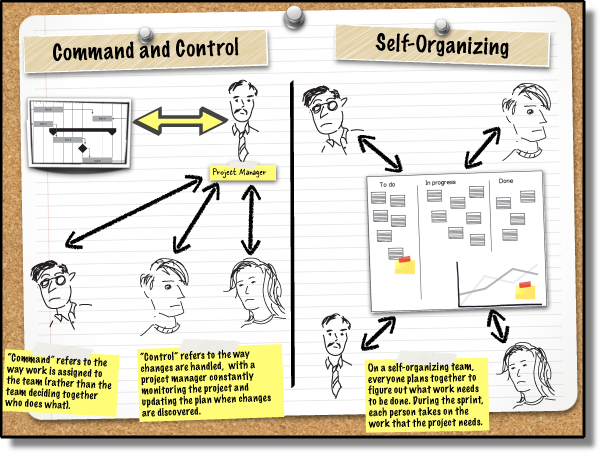
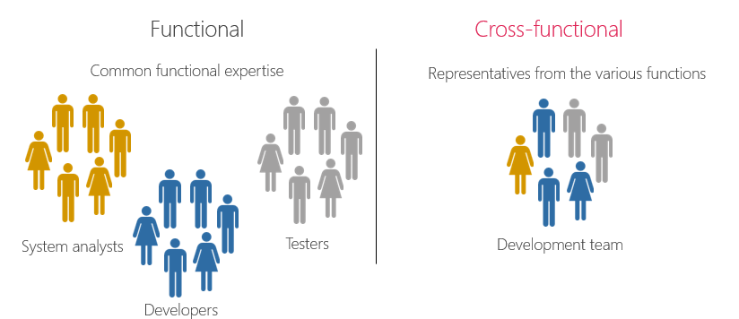
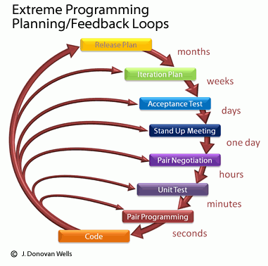
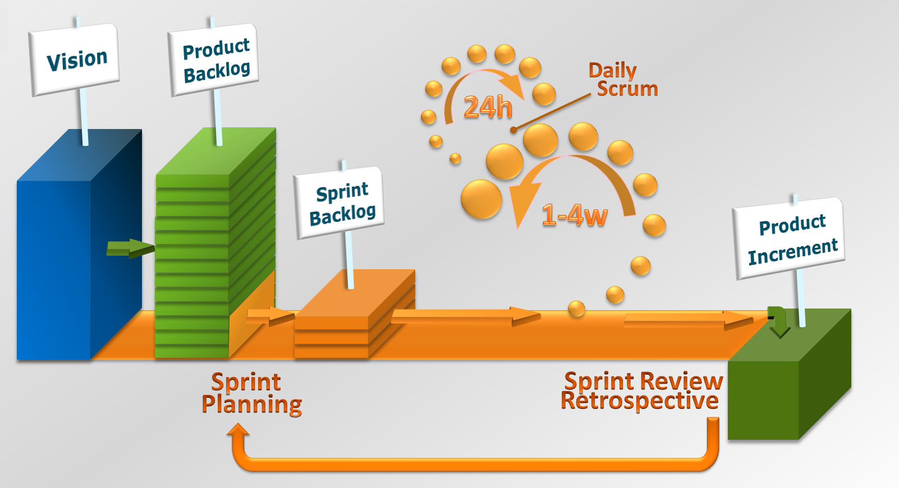

Agile Processes
The goal of agile is to:
- enable team productivity
- reduce the cost of changes in requirements
- create a short consistent development cylce
- and a predictable deployment schedule
- use team metrics and feedback
The Agile manifesto
- Individuals and interactions > processes and tools
- Working software > comprehensive documentation
- Customer collaboration > contract negotiation
- Responding to change > following a plan
* when you have to make a trade-off
prefer the thing on the left.
Actors
- Investors / Stackholders
- Product Manager / - Owner
- Development Team
- Clients / Users
Self organizing and Self directing teams
Functional vs Cross-Functional Teams Composition
General iteration cycle
- Planning (and Estimation)
- Stand-ups and Code reviews
- Retrospective and Backlog management
Conway's law
Organizations are constrained to produce systems
which are copies of the communication structures of the organizations
Agile Methodologies:
- Extreem Programming (XP)
- The lean startup
- Scrum
- Kanban
* In reality each team/company creates its own processes; mixing-and-matching aspects of different methods.
Extreme Programming
Extreem Programming
- Developed in the 90s
- Shortens the development cycle
from years to months - Practices:
- Pair Programming
- Embracing change
- Test driven development
The lean startup principles
- Entrepreneurs are everywhere
- Build-Measure-Learn
- Measure processes & products
- Validated learning
- Eliminate uncertainty
- Work smarter not harder
- Build a Minimum Viable Product
Scrum
Scrum Values:
- Transparency and Openness
- Inspection and Introspection
- Adaptation and Innovation
- Estimation and Delivery
- Focus and Respect
Project board

Kanban
- Visualize your workflow
- Limit work in progress
- Make policies explicit
- Implement feedback loops
- Improve collaboratively
- Evolve experimentally
Estimation time tables
| XP | Lean | Scrum | Kanban | |
| Dev Cycle | weeks | none | velocity | past performance |
| Release Cycle | months | as soon as possible | weeks | upon request |
Backlog
List of outstanding work
- Feature ideas & requests
- Bugs & Improvements
- Tooling, Production /Operational/
- Research & Analysis tasks
Stand up
- Short regular (daily) meeting
- Keeps the team in sync
- Each team member shares with the team:
- What am I working on?
- Do I need help / Am I blocked?
- Is there anything else the team should know?
Planning
- Scheduled meeting
- Discuss features, bugs and improvements
- Create and update cards on the agile board
- Each team member should know and agree on:
- what work will be done next
- when should the work be complete
- how will the problems be solved
Retrospective
- Scheduled meeting
- Discuss work-flow, processes and improvements
- Create and update cards on the agile board
- Each team member should:
- share their views on the overall process
- suggest improvements
- make a personal commitment to improve
Links:
Course Schedule:
| week 1 03.02.2017 | History of the web | Fullstack Principles | Development Processes | Agile Processes | DevOps Basics | Git |
| week 2 10.02.2017 | Frontend Overview | Backend Overview | Network Overview | Testing | JavaScript Overview | JavaScript Tooling |
| week 3 17.02.2017 | Web Architectures | RESTful principles | SOLID principles | Web Components | Continuous Integration | |
| week 4 24.02.2017 | Databases basics | Using APIs | Deployment Automation | Monitoring | In-class project consultations | |
| week 5 17.03.2017 |
Project presentations Final Test Course Retrospective and Q&A |
|||||